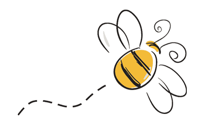

Natura
Naturalny las, górskie łąki, leśne polany to stołówka naszych pszcżół

Zdrowie
Nasze pszczoły widziały żubra, wilka a nawet misia ale nie widziały pestycydów

Pasja
Pszczelarzenie uzaleznia - no i wpad

O NAS
Celem, jaki przyświecał nam przy założeniu pasieki, było stworzenie miejsca przyjaznego dla pszczół. Z dala od wszystkich zagrożeń cywilizacji i bolączek trapiących współczesne pszczelarstwo. Dziś możemy potwierdzić, że cel został osiągnięty. Zdrowe, nie nękane przez chemię, głód i stres pszczoły odwdzięczają się nam miodem takim, jak za dawnych czasów. Świadectwem tego są liczni turyści z całego kraju, którzy chętnie odwiedzają naszą pasiekę w trakcie swoich bieszczadzkich wędrówek.

O wyjątkowości naszej pasieki decyduje przede wszystkim jej położenie. Znajdujemy się w otulinie Bieszczadzkiego Parku Narodowego, na pograniczu Ciśniańsko - Wetlińskiego Parku Krajobrazowego i Słowackiego Parku Narodowego Połoniny. Naturalne lasy bukowo-jodłowe i górskie łąki, nie dotknięte gospodarką i wszechobecną monokulturą rolną, stwarzają przez cały rok idealne warunki rozwoju rodzin pszczelich. Toczek, który jest ich domem, znajduje się na wysokości 700 m n.p.m., co nawet dla terenów górskich jest rzadko spotykane. Srogie i długie zimy, nie są dla nich przeszkodą, a wydają się wręcz oczyszczające. Dbając o „wolność wyboru” pszczół, nie wywozimy ich na pożytki tak popularne w innych częściach kraju. Nie znajdą Państwo u nas miodów rzepakowych. Rezygnując z korzyści ekonomicznych, postawiliśmy na zdrowe pszczoły i miody w czystej postaci. Bioróżnorodność otaczająca naszą pasiekę, powoduje, że za każdym razem pozyskiwany miód jest jedyny w swoim rodzaju, a każde miodobranie jest również dla nas zagadką.

Serdecznie zapraszamy do naszej pasieki, gdzie mogą Państwo bez pośpiechu skosztować miodu, obejrzeć pasiekę, zadać nurtujące was pytania. Prowadzimy również sprzedaż wysyłkową miodu, popularną wśród wielu osób, które nas wcześniej odwiedziły i postanowiły uzupełniać zapasy prawdziwego miodu właśnie z naszej pasieki. Do zobaczenia.
Kontakt
Zapraszamy do wysyłania wiadomości E-mail lub korzystania z wbudowanego w stronę formularza kontaktowego.
Pasieka Przełęcz nad Roztokami
Roztoki Górne 9
38-607 Cisna
numer konta do przelewów: 48 1440 1387 0000 0000 1288 1851
pasiekaroztoki@onet.pl
694-801-621